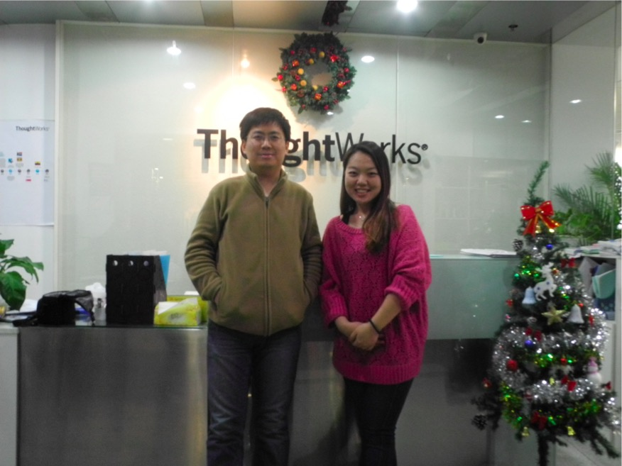
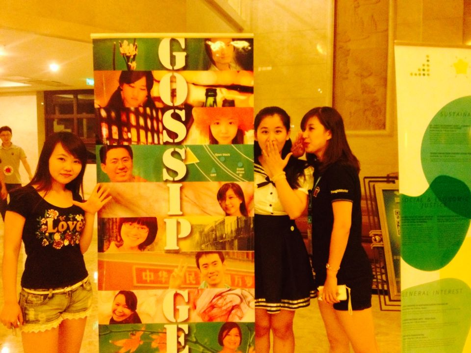
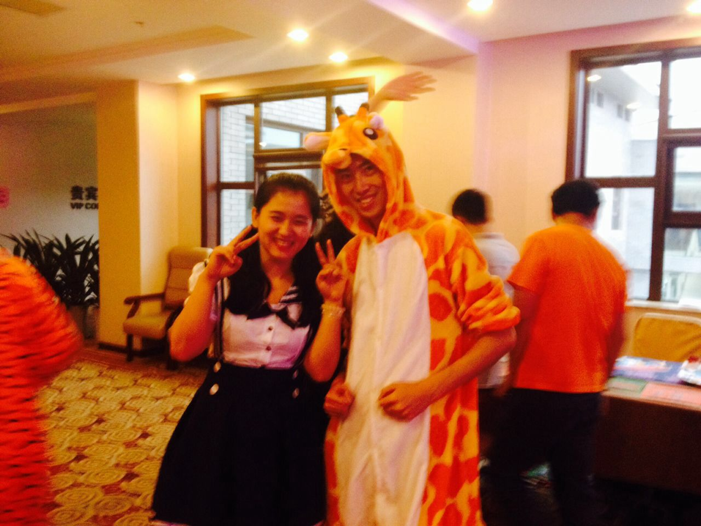
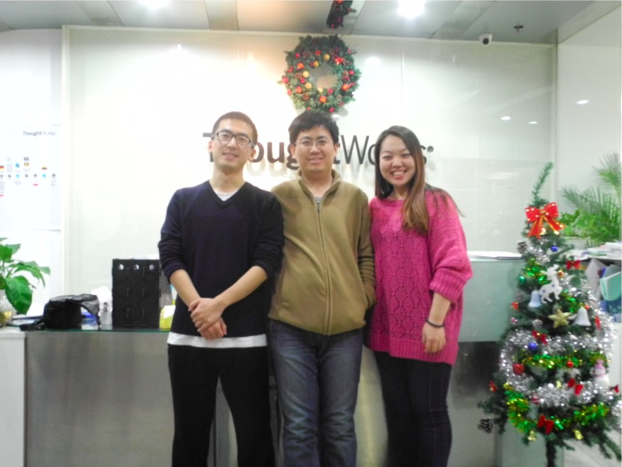
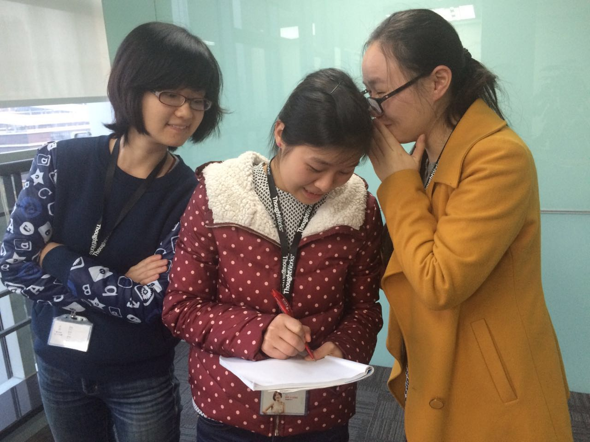
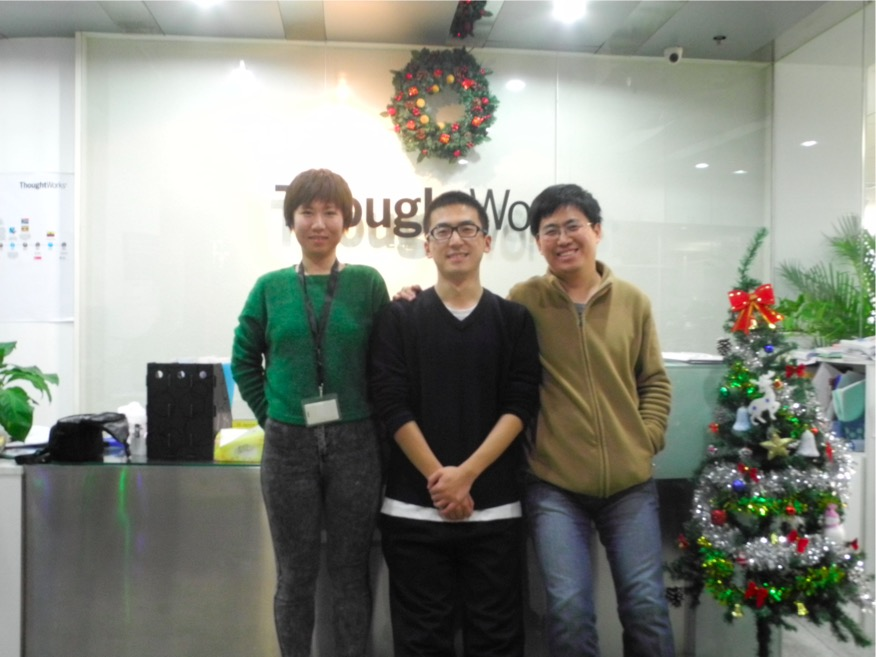
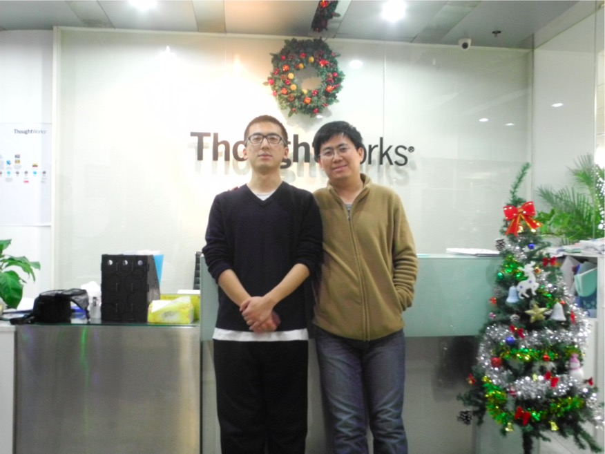
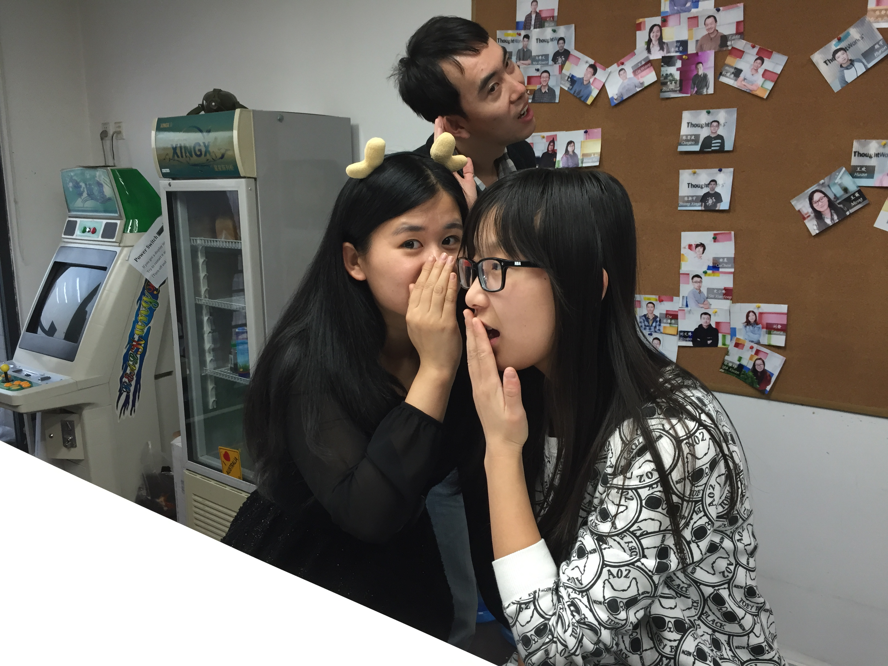
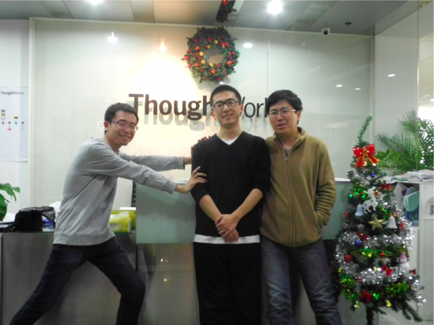

八卦杂志想法落地
孙镌宸、吴雪峰、史小锋、陈庆敏在西安Office的一间小会议室里，讨论出了八卦杂志的初步想法和大概思路。
Dec 6 2013八卦杂志社成立
第一批八卦杂志社成员由孙镌宸、吴雪峰、史小锋、李青、雷钰、公茂强、祁兮、庆敏八人组成，人员分布横跨西安、成都、北京、上海四地。
Dec 9 2013北京小分队，杨晓彤强势加入
主任终于不是一个人在战斗了！
 Dec 12 2013Gossip Geek第一次票选活动
票选你心中的Office男神在四地办公室全面铺开，各个Office之内的八卦之魂纷纷燃烧起来。
 Dec 18 2013
Dec 18 2013
Gossip Geek创刊号2013年12月刊发出
（这是在预示着我们日后会深陷拖延症吗）
Jan 1 2014上海编辑祁兮入驻西安
由于前面两个月不作为的表现，差点被开除出八卦的队伍。不过他接下来的表现还是向世人证明了他是一位认真负责的八卦好编辑。
 Feb 17 2014
Feb 17 2014
武汉编辑部正式成立
朱榕、孙泓成为武汉八卦小分队的首批成员。
 Mar 5 2014小锋 roll off
小锋因为HR工作繁忙，roll off出八卦小分队，西安小分队形成了孙镌宸、吴雪峰、祁兮三足鼎立之势。但小锋作为创世团队成员之一，所做出的贡献和他的八卦精神永远活在我们心中。
 Mar 21 2014专访板块上线
雷钰收到热心读者李科伟的feedback，建议加入专访板块，李青主动请缨拉上彪妹一起专访熊节。
Mar 26 2014李晓东加入北京Office
恭喜北京小分队喜获最佳苦力一枚，而且英俊潇洒风流倜傥，长得略像房祖名。
 Mar 26 20143月刊发出（又是一次拖延症）
首次加上专访板块，群众反响热烈，八卦小组决定将专访板块变成杂志的常规版块。
Apr 1 2014张放加入成都Office
认真负责有创意的张放同学，使得成都Office又焕发出了第二春
 Apr 22 2014陈思加入北京Office，晓彤 roll off
晓彤在前四个月里兢兢业业尽职尽责的表现都让大家，看在眼里，喜在心里。因为繁忙的工作，晓彤不得不roll off出八卦团队，不过我们又迎来归国优秀UX——陈思同学
 Apr 29 2014陈思 roll off
果然UX还是太忙了啊……
 May 2014技术创新大赛专刊
配合技术创新大赛组委会，专访上届获奖作品团队。
May 16 2014首次加入武汉区内容
八卦杂志5月刊首次加入武汉区内容。
May 29 2014改版
八卦杂志首次使用mailchamp发布，大大提升了易读性，减少了编辑时的工作量。
June 27 2014李彤欣（Momo）强势加入西安小分队
能口吞拳头的Momo同学的到来，为西安Office带来一阵春风。从此西安八卦小分队成员的年龄段更丰富了，横跨70，80和90。
 July 1 2014Away Day特刊
八卦杂志第一期特刊。这次特刊一经发出，读者纷纷表示“这才是我们想要看的八卦”，八卦小分队在这期之后的catchup中决定，改变八卦杂志的行文风格，适当减少官方事件的报道比重，争取从更独特的角度将Office的有趣小事写出来。
Sept 3 2014张渊加入北京Office
北京小分队终于突破了两人大关，可是为什么都是男生啊喂！女生的八卦精神在哪里～在！哪！里！
 Sept 28 2014西安小分队聘入第一位首席记者——黄磊
黄磊作为刚入职的新人，就因为一篇关于西安Office拓展训练的报道邮件被西安八卦小分队发现，从此走上了首席特约记者的不归路（等等……）
 Nov 5 2014
Nov 5 2014